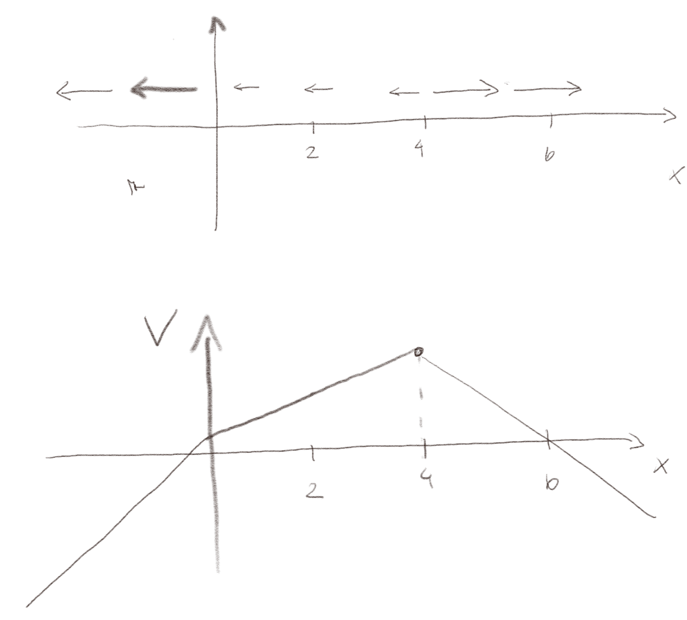

Uke 05/09-11/09: Elektrisk potensiale
Læringsmål
Denne uken ser vi på hvordan vi bruker skalarpotensialet til å diskutere og forstå elektrostatiske systemer for systemer av enkeltladninger og systemer med ladningsfordelinger.Test deg selv
Test yourself
Exercise 2.1: From field to potential
The figure below illustrates two electric fields \( \vec{E} \) in the \( xy \)-plane. Sketch the electric potential \( V(x,0) \) along the \( x \)-axis and \( V(0,y) \) along the \( y \)-axis for the two situations. (Assume \( V(0,0) = 0 \)).
Exercise 2.2: From potential to field
The figure below illustrates electric potentials, \( V(x) \), for different physical situations. Sketch the corresponding electrical fields with arrows on top of the figure. Can you also sketch the electric field \( E_x(x) \)?
Exercise 2.3: Maximum and minimum of the potential
The figure illustrates the electric field around a dipole. The electric potential is zero at infinity.
a) Where is the minimal value for the electric potential?
\( (-1,0) \)
The electric field points from large to small values of the electric potential. If we move a charge from the infinity in towards the dipole along the negative \( x \)-axis, all the arrows point toward the negative charge. The potential decreases as we move along this line. The mininal value is at the negative charge, where the potential approaches minus infinity.
b) Where is the maximum value for the electric potential?
\( (1,0) \)
The electric field points from large to small values of the electric potential. If we move a charge from the infinity in towards the dipole along the positive \( x \)-axis, all the arrows point away from the positive charge. The potential increases as we move along this line. The maximum value is at the positive charge, where the potential approaches infinity.
c) Where is the electric potential zero?
At infinity and at \( (0,y) \).
The electric potential is zero at infinity. However, if we move along the line \( (0,y) \), the direction of the field is normal to the direction of motion. All the points along this line will have zero potential. This line separates positive and negative values of the potential.
Exercise 2.4: Potentials and sparks
A spark in air occurs where the electric field exceeds a maximum value beyond which the air becomes a conducting plasma. You may have experienced sparks between your finger and another object if you are charged with static electricity. Let us model this process by assuming that your finger has an electrical potential \( V \) and that for example your table lamp has potential zero. Explain what happens to the electric field as your finger approaches the lamp. (You can assume that the potential of your finger and the lamp does not change before a spark occurs).
The electric field between your finger and the lamp depends on the potential difference \( V \) and the distance \( d \) between the two objects: \( E = - \partial V / \partial x \simeq -V/d \). As the distance becomes shorter, the electric field becomes larger. At some point the field increases beyond the critical strength of the air, producing a spark and a discharge of the charges on your finger to the lamp.
Diskusjonsoppgaver for gruppene
Exercise 2.5: Finding the field from the potential
If the electric potential at a single point is known, can \( \vec{E} \) at that point be determined? If so, how? If not, why not?
Exercise 2.6: Zero field
If \( \vec{E} \) is zero throughout a certain region of space, is the potential necessary also zero in this region? Why or why not? What can be said about the potential?
Exercise 2.7: The zero-field path
If \( \vec{E} \) is zero everywhere along a certain path the leads from point A to point B, what is the potential difference between those two points? Does this mean that \( \vec{E} \) is zero everywhere along any path from A to B? Explain.
Exercise 2.8: Motion in a simple field
The figure illustrates the scalar potential, \( V(x) \), resulting from some charge configuration. Discuss what possible types of motion a positively and a negatively charged particle can have by comparing with the potential energy of a cart rolling down a hill. Illustrate the motions in an energy diagrams (\( U(x) \) for the particle and for the cart).
Gruppeoppgaver
Exercise 2.9: Electric fields and electric potential
Below is a drawing of electric field vectors to illustrate the electric field. The length of the vector is proportional to the magnitude of the electric field. The direction of the vector is in the direction of the electric field. The electric field is defined in all points in space; we just can't draw all the vectors.
a) Suppose the reference point (zero) for the electric potential is at the origin (0cm,0cm). What are the electric potentials at points \( a \), \( b \), and \( c \)?
\( V_a = \qquad \qquad \qquad \qquad V_b= \qquad \qquad \qquad \qquad V_c = \)
\( V_a = 100 \text{V} \), \( V_b = 300 \text{V} \), \( V_c = 300 \text{V} \).
The electric potential in point a is given as the integral: $$ \begin{equation} V_a = \int_a^{\text{ref}} \vec{E} \cdot d \vec{r} \; . \tag{2.1} \end{equation} $$ For point a this is the integral from a to the origin. In this region the electric field is uniform and directed along the \( x \)-axis, \( \vec{E} = -10^4 \text{N/C} \hat{x} \). The integral is therefore simply: $$ \begin{equation} V_a = \vec{E} \cdot \Delta \vec{r} \; , \tag{2.2} \end{equation} $$ where \( \Delta \vec{r} = (-1 \text{cm},-1\text{cm}) \). We see that only the component of \( \Delta \vec{r} \) in the \( x \)-direction will contribute, because \( E_y = 0 \), giving: \( V_a = \left( -10^4 \text{N/C}\right) \, \left( -1 \text{cm} \right) = 10^2 Nm/C = 10^2 V \). We check the sign by observing that the electric field point from high to low potential, as it should. Similarly, we find \( V_b = 3 \, 10^2 \text{V} \) and \( V_c = V_b = 3 \, 10^2 \text{V} \).
b) With the same choice of reference point, plot the electric potential as a function of position along the dotted line in the figure.

You put a \( + 50 \mu \text{C} \) charge at point \( a \) (1cm,1cm), and move it to point \( b \) (3cm,1cm) at a constant, slow velocity.
c) What force vector \( (F_x,F_y) \) do you need to apply to keep the velocity constant?
\( (F_x,F_y) = (0.5 \text{N},0) \)
For the velocity to be constant, the net force must be zero. The force from the electric field is \( q\vec{E} \), where \( \vec{E} \) is uniform along the line from a to b, \( \vec{E} = (-1,0) \, 10^4 \text{N/C} \). The net force is \( (F_x,F_y) + q \vec{E} = 0 \), which gives \( (F_x,F_y) = - q \vec{E} = 50 10^{-6} \text{C} \, 10^4 \text{N/C} \hat{x} = 0.5 \text{N} \hat{x} \).
d) How much work did you do to move the particle?
\( 10^{-2} \text{Nm} \)
The work done by the force \( \vec{F} \) was \( W = \vec{F} \cdot \Delta \vec{r} = (0.5 \text{N},0) \cdot (2 \text{cm}, 0) = 10^{-2} \text{Nm} \).
e) What is the potential energy difference \( U_b - U_a \)?
\( 10^{-2} \text{Nm} \)
The potential energy difference is the negative work done by the electric field, which is the work done by the force \( \vec{F} \): \( U_b - U_a = 10^{-2} \text{Nm} \).
f) What is the electric potential difference \( V_b-V_a \)?
\( 200 \text{V} \)
The electric potential difference is \( V_b - V_a = 300 \text{V} - 100 \text{V} = 200 \text{V} \).
g) What is the relation between the potential energy and the electric potential?
\( \Delta V = \Delta U/q \)
In general, \( V = U/q \), as long as the potential energy and the electric potential have the same reference points. Here, we see that \( (U_b-U_a)/a = 10^{-2} \text{Nm} / (50 \cdot 10^{-6}C) = 200 \text{V} \), which corresponds to the value we found from the electric field.
Exercise 2.10: Gradients
In this exercise we will practice basic skills to find the scalar potential, interpret gradients in the potential, and find the field from the potential.
Two identical charges, \( q \), are placed at \( (a,0,0) \) and \( (-a,0,0) \), where \( a \) is a given length.
a) Find the electrical potential \( V(x) \) everywhere along the \( x \)-axis. Is the potential negative when \( x < a \)? Is the potential zero at \( x=0 \)? Explain.
\( V(x) = \frac{q}{4 \pi \epsilon_0} \left( \frac{1}{|x-a|} + \frac{1}{|x+a|} \right) \)
We use the superposition principle. The potential in a point \( x \) from a charge \( q \) at \( x_1 \) is $$ \begin{equation} V_1(x) = \frac{q}{4 \pi \epsilon_0 |x - x_1|} \; . \tag{2.3} \end{equation} $$ We add the contributions from \( x_1 = a \) and \( x_2 = -a \), getting: $$ \begin{equation} V(x) = \frac{q}{4 \pi \epsilon_0} \left( \frac{1}{|x-a|} + \frac{1}{|x+a|} \right) \; . \tag{2.4} \end{equation} $$
b) Plot or sketch the potential along the \( x \)-axis and discuss the direction of the electric field.
c) Use the sketch of the potential to draw equipotential points (at a constant spacing in potential).
Equipotential points are point \( x \) where \( V(x) = V_0 \).
d) Find the potential \( V(y) \) everywhere along the \( y \)-axis.
\( V(y) q/(2 \pi \epsilon_0 (y^2 + a^2 )^{1/2} ) \)
The potential along the \( y \)-axis is also found using the superposition principle. The contribution from each of the charges \( q \) are the same in this case: $$ \begin{equation} V(y) = \frac{q}{4 \pi \epsilon_0 (y^2 + a^2)^{1/2} } + \frac{q}{4 \pi \epsilon_0 (y^2 + a^2)^{1/2} } = \frac{q}{2 \pi \epsilon_0 (y^2 + a^2 )^{1/2} } \; , \tag{2.5} \end{equation} $$ where \( R = (y^2 + a^2 )^{1/2} \) is the distance from a charge (\( \pm q \)) to the point \( \vec{r} = (0,y,0) \).
e) Sketch equipotential curves in the \( xy \)-plane for this system.
Exercise 2.11: Vector calculus
(From Johannes Skaar)
a) Flere typer linjeintegraler opptrer ofte i fysikken og matematikken. Noen av disse er: $$ \begin{equation} (1) \; \int_C F dl \qquad (2) \int_C F d \vec{l} \qquad (3) \int_c \vec{F} dl \qquad (4) \int_C \vec{F} \cdot d \vec{l} \label{} \end{equation} $$ Hvilke av integralene passer til de to følgende fysiske situasjoner:
(A) Hvis massetettheten til en tråd er F, hva er den totale massen til tråden?
(B) Arbeid utført av en kraft \( \vec{F} \) når et legeme forflyttes langs en kurve \( C \).
b) La nå \( \vec{F} \) og \( F \) være konstanter ulik 0, og benytt integrasjonskurvene \( C_1 \) og \( C_2 \) fra figuren under. I hvilke av tilfellene (1)-(4) blir integralet langs disse kurvene 0? Tegn inn \( d \vec{l} \) for et par punkter på hver kurve.
c) For overflateintegraler blir de tilsvarende integralene på formen: $$ \begin{equation} (1) \iint_S F dS \qquad (2) \iint_S F d \vec{S} \qquad (3) \iint_S \vec{F} dS \qquad (4) \iint_S \vec{F} \cdot d \vec{S} \label{} \end{equation} $$ Hvilke integraler blir null? Ta først utgangspunkt i en torus og i en åpen kjegle.
d) Hvordan er retningen for \( d\vec{S} \) definert for torusen? Skisser \( d\vec{S} \) i tre punkter.
e) Betrakt nå flaten \( S_1 \) definert av kurven \( C_1 \), i hvilken retning peker \( d\vec{S} \) for \( S_1 \)?
Exercise 2.12: Line charge
(We will now address the problem of a line charge, but using potential instead of electric field, as we did previously.)
A rod of length \( L \) has a charge \( Q \). We place the rod along the \( x \)-axis with its center at the origin.
a) We want to calculate the electric potential \( V(0,y,0) \) along the \( y \)-axis. What is the contribution to the potential from the piece of length \( dx \) at \( x \)?
\( \d V = (Q/L)\d x'/(4 \pi \epsilon_0 ((x')^2 + y^2)^{1/2}) \)
The contribution is $$ \begin{equation} d V = \frac{dq}{4 \pi \epsilon_0 R} \tag{2.6} \end{equation} $$ First, let us note that we use the variable \( x' \) and \( dx' \) to describe the position of the small element to avoid confusion between the point \( (x',y',z') \) of the small element and the point \( (x,y,z) \) where we want to find the potential. For an element along the \( x \)-axis \( (x',y',z') = (x',0,0) \) and for a point on the \( y \)-axis we have \( \vec{r} = (0,y,0) \) so that \( \vec{R} = \vec{r} - \vec{r}' = (0,y,0) - (x',0,0) = (-x',y,0) \) and $ R^2= (x')^2 + y^2$. We also write \( dx' \) to make sure there is no confusion as to the choice of integration variable. We assume that the charge is uniformly distributed with a charge density \( \rho_l = Q/L \), so that \( dq = \rho_l dx' = (Q/L) dx' \). This gives: $$ \begin{equation} dV = \frac{(Q/L)dx'}{4 \pi \epsilon_0 ((x')^2 + y^2)^{1/2} } \; . \tag{2.7} \end{equation} $$
b) Write down an expression for the electric potential \( V(0,y,0) \) in terms of an integral. Explain what variable you integrate over.
\( V = \int_{-L/2}^{L/2} (Q/L) / (4 \pi \epsilon_0 \left( (x')^2 + y^2 \right)^{1/2} ) dx' \)
The electric potential is found from the integral over all the charge contributions \( dq = \rho_l dx' \): $$ \begin{equation} V = \int_{-L/2}^{L/2} \frac{(Q/L) dx'}{4 \pi \epsilon_0 \left( (x')^2 + y^2 \right)^{1/2} } \; . \tag{2.8} \end{equation} $$ Notice that the integral is over \( dx' \) and not \( x \)!
c) Anne argues that with this integral it is very simple to find the electric field \( E_y = - \partial V/\partial y \): This is simply what is inside the integral, since derivation is the opposite of integration. Is Anne right? Explain.
No
No, she is not correct. We can take the partial derivative with respect to \( y \) inside the integral, but this will only generate a new integral that still needs to be solved.
Hjemmeoppgaver
Exercise 2.13: Dipole and gradient
Two identical charges, \( q \), are placed in \( (a, 0, 0) \) og \( (-a, 0, 0) \), \( a>0 \).
a) Implement the Python programs from the text to find the electric potential in the \( xy \)-plane from the two charges. Illustrate the potential with contour lines.
We generate the electric potential using the code from the text. We introduce a function findpotential that finds the potential in the \( xy \)-plane with a given resolution.
import numpy as np
import matplotlib.pyplot as plt
def epotlist(r,Q,R):
# Find V*4*pi*epsilon0 at r from a charges Q at positions R
V = 0
for i in range(len(R)):
Ri = r - R[i]
qi = Q[i]
Rinorm = np.linalg.norm(Ri)
V = V + qi/Rinorm
return V
def findpot(R,Q,L,N):
x = np.linspace(-L,L,N)
y = np.linspace(-L,L,N)
rx,ry = np.meshgrid(x,y)
# Set up electric potential
V = np.zeros((N,N),float)
# Calculate the potential
for i in range(len(rx.flat)):
r = np.array([rx.flat[i],ry.flat[i]])
V.flat[i] = epotlist(r,Q,R)
return rx,ry,V
We setup the charges:
# Setup charges
R = []
Q = []
r0 = np.array([1,0])
q0 = 1
R.append(r0)
Q.append(q0)
r0 = np.array([-1,0])
q0 = 1
R.append(r0)
Q.append(q0)
And then we calculate and visualize the electric potential using contour lines:
# Calculate the potential
rx,ry,V = findpot(R,Q,3,81)
# Visualize the potential
plt.figure(figsize=(8,8))
plt.contour(rx,ry,V,200)
plt.axis('equal')
The resulting plot is shown in the figure:

b) Find the electric field in the \( xy \)-plane numerically by taking the gradient of the electric potential and illustrate the field with a vector plot. Is the electric field normal to the contour lines?
The electric field is found using the gradient. The electric field is visualized using the vector field.
Ey,Ex = np.gradient(-V)
# Calculate field magnitude and unit vectors
Emag = np.sqrt(Ex**2 + Ey**2)
minlogEmag = min(np.log10(Emag.flat))
scaleE = np.log10(Emag) - minlogEmag
uEx = Ex / Emag
uEy = Ey / Emag
# Visualize using both arrows and colors
levels = np.arange(0, 3.5+0.2, 0.2)
cmap = plt.cm.get_cmap('plasma')
plt.figure(figsize=(16,8))
ax1 = plt.subplot(1,2,1)
plt.contourf(rx,ry,V,10, cmap=cmap, levels=levels, extend='both')
skip = (slice(None, None, 4), slice(None, None, 4))
plt.quiver(rx[skip],ry[skip],uEx[skip]*scaleE[skip],uEy[skip]*scaleE[skip])
ax1.set_aspect('equal', 'box')
ax2 = plt.subplot(1,2,2)
plt.contourf(rx,ry,V,10, cmap=cmap, levels=levels, extend='both')
plt.streamplot(rx,ry, Ex, Ey)
ax2.set_aspect('equal', 'box')
c) Let us make one of the charges negative, making the system a dipole. Repeat parts a og b for this new system.
d) The vector plots are maybe not so pretty. Plot the same data using streamlines instead. What are the advantages and disadvantages of a streamline plot?
The figure above shows the streamline plots. These provide insight into the direction of the field, but do not visualize the strength of the field. In order to visualize the strength we would need to show the field lines (see description in text).
Exercise 2.14: Potential and field above a disk
In this exercise we will address the electric field along the \( z \)-axis above the center of a disk in the \( xy \)-plane. The disk has radius \( a \) and a constant surface charge density \( \rho_s \).
a) Find the contribution \( \vec{d}\mathbf{E} \) to the electric field at a height \( z \) above the disk from an area element \( \vec{d}S \). You may assume \( z > 0 \).
It may be useful to work in cylinder coordinates. Remember that the area element in the \( r\phi \)-plane when we integrate in cylinder coordinates is \( r\vec{d}r\vec{d}\phi \)
We integrate the contributions to the electric field in the point \( (0,0,z) \). The distance from a point \( (r,\phi, 0) \) on the disk and to the observation point \( (0,0,z) \) is \( R = \sqrt{r^2 + z^2} \). Consequently, we get $$ \begin{equation} \vec{d}E = \frac{\rho_s}{4\pi\epsilon_0 R^2} \vec{d}S = \frac{\rho_s}{4\pi\epsilon_0 (r^2+z^2)} \vec{d}S \tag{2.10} \end{equation} $$ These contributions have components both in the \( z \)-direction and a component normal to the \( z \)-axis, that is, in the direction \( \hat{\mathbf{r}} \) in cylinder coordinates. We call the angle between the \( z \)-axis and the line from \( (0,0,z) \) to \( (r, \phi, 0) \) $\alpha$. We know that the electric field points in the same direction as the vector from the charge to the observation point. This gives $$ \begin{align} \vec{d}E_z = \vec{d}E\cos\alpha \tag{2.11}\\ \vec{d}E_r = \vec{d}E\sin\alpha \tag{2.12} \end{align} $$ We find that \( \cos\alpha = \frac{z}{\sqrt{r^2+z^2}} \) and \( \sin\alpha = \frac{r}{\sqrt{r^2+z^2}} \) so that $$ \begin{equation} \vec{d}\mathbf{E} = \frac{\rho_s}{4\pi\epsilon_0}\frac{-r\hat{\mathbf{r}} + z\hat{\mathbf{z}}}{(r^2+z^2)^{3/2}} \ \vec{d}S \tag{2.13} \end{equation} $$
b) Find the electric field \( \vec{E} \) from the disk at the height \( z \).
Integrate over the disk \( \vec{d}q = \rho_s\vec{d}S \). It may help to start by introducing a symmetry argument so that you only need to find one of the components of the \( \vec{E} \)-field.
Because the system has rotation symmetry around the \( z \)-axis (it is identical if we rotate the disk around the \( z \)-axis), the field contributions in the \( x \) and \( y \)-directions must cancel. This means we only need to find the \( z \)-component. We need to solve: $$ \begin{equation} E_z = \int_S \d E_z = \int_S \frac{\rho_s z}{4\pi\epsilon_0 (r^2+z^2)^{3/2}} \d S \tag{2.14} \end{equation} $$ We choose to integrate the surface \( S \) in concentric circles with perimeter \( 2 \pi r \) and thickness \( d r \), so that \( d S = 2 \pi r d r \): $$ \begin{eqnarray} E_z &=& \int_0^a \frac{\rho_s z}{4\pi\epsilon_0 (r^2+z^2)^{3/2}} 2\pi r \d r \\ &=& \frac{\rho_s}{2\epsilon_0} \int_0^a \frac{zr}{(r^2 + z^2)^{3/2}} \d r \\ &=& \frac{\rho_s}{2\epsilon_0} \left[ -\frac{z}{\sqrt{z^2 + r^2}} \right]_0^a \\ &=& \frac{\rho_s}{2\epsilon_0} \left(1 - \frac{z}{\sqrt{z^2+a^2}}\right) \end{eqnarray} $$ The field is therefore $$ \begin{equation} \vec{E} = \frac{\rho_s}{2\epsilon_0} \left(1 - \frac{z}{\sqrt{z^2+a^2}}\right) \hat{z} \tag{2.15} \end{equation} $$
c) Use the result from the previous exercise to find the electric potential \( V \) in the same point.
We integrate to find the electric potential. Since we know the field along the \( z \)-axis, we choose to integrate from infinity along the \( z \)-axis. $$ \begin{eqnarray} V &=& - \int_\infty^z E_z(z') \vec{d} z' = -\int_\infty^z \frac{\rho_s}{2\epsilon_0} \left(1 - \frac{z'}{\sqrt{z'^2+a^2}}\right) \d z' \\ &=& -\frac{\rho_s}{2\epsilon_0} \left[z' - \sqrt{z'^2 + a^2}\right]_\infty^z \\ &=& \frac{\rho_s}{2\epsilon_0} \left(\sqrt{z^2+a^2} - z\right) \end{eqnarray} $$ In the last line we have used the limit \( \lim_{x\to \infty} x - \sqrt{x^2 + 1} = 0 \).
d) Find the electric field \( \vec{E} \) in the limit where \( z \) is small (that is \( z \to 0 \) from above). Interpret the result.
\( V_{z\to 0} = \frac{\rho_s}{2\epsilon_0} \)
We find the behavior in the limit $$ \begin{equation} \lim_{x\to 0} 1-\frac{z}{\sqrt{z^2+a^2}} = \lim_{x\to 0} 1-\frac{1}{\sqrt{1+\frac{a^2}{z^2}}} \\ = 1 \tag{2.17} \end{equation} $$ The field for small \( z \) therefore becomes \( \vec{E} = \frac{\rho_s}{2\epsilon_0}\hat{z} \). This is the same as the field from an infintely large plane, which is reasonable because the plan relatively becomes larger and larger the closer we get to it.
e) Sketch/plot \( |\vec{E}| \) as a function of \( z \) for \( z>0 \).
We plot the field using the following code:
import numpy as np
import matplotlib.pyplot as plt
z = np.linspace(0,3,100)
E = 1-z/np.sqrt(z**2+1)
plt.plot(z,E)
plt.xlabel(r"$z/a$")
plt.ylabel(r"$2\epsilon_0 E/\rho_s$")
f) Show that \( \vec{E} \) approaches the field from a point charge for large \( z \).
Use the series expansion \( (1+x)^a \approx 1 + ax \) when \( x \ll 1 \).
We use the approximation given in the hint: $$ \begin{equation} \frac{z}{\sqrt{z^2+a^2}} = \left(1 + \frac{a^2}{z^2}\right)^{-1/2} \approx 1 - \frac{1}{2} \frac{a^2}{z^2} \tag{2.18} \end{equation} $$ when \( a/z \ll 1 \), that is \( z \gg a \). In addition, we use that the total charge of the disk is \( Q_S = \rho_s \pi a^2 \) and get: $$ \begin{eqnarray} \mathbf{E} &=& \frac{\rho_s}{2\epsilon_0} \left[ 1- \left( 1-\frac{1}{2} \frac{a^2}{z^2} \right) \right]\z \\ &=& \frac{\rho_s}{4\epsilon_0}\frac{a^2}{z^2} \z \\ &=& \frac{Q_S}{4\pi\epsilon_0 z^2} \z \end{eqnarray} $$ which is the same expression as Coulomb's law, that is, the field from a point charge. This is because from far away the disk is approximately a point charge.
Exercise 2.15: Plate with hole
Find the magnitude of the electric field \( |\vec{E}| \) at a height \( z \) along the \( z \)-axis over an infinitely large, plane surface with a circular hole with radius \( a \). The center of the whole is in the origin. The surface has a uniform charge density \( \rho_s \).
Superposition
The field over an infinite plate without a hole is the same as the field from an infinite plate in the limit \( z \to 0 \).
Vi tar utgangspunkt i at vi kjenner feltet over et uendelig stort ladd \( xy \)-plan: \( \mathbf{E} = \frac{\rho_s}{2\epsilon_0} \z \). Vi kjenner også, fra en tidligere oppgave, at feltet over en ladd, sirkulær disk i \( xy \)-planet er \( \mathbf{E} = \frac{\rho_s}{2\epsilon_0} \left(1 - \frac{z}{\sqrt{z^2+a^2}}\right) \z \). Vi bruker så superposisjon ved at vi tar feltet fra et ladd plan og trekker fra feltet fra en disk, slik at vi får feltet fra en plate med et siruklært hull. $$ \begin{eqnarray} \vec{E}_{\text{hullplan}} &= \vec{E}_{\text{plan}}-\vec{E}_{\text{disk}} \\ &=& \frac{\rho_s}{2\epsilon_0} \z - \frac{\rho_s}{2\epsilon_0} \left(1 - \frac{z}{\sqrt{z^2+a^2}}\right) \z \\ &=& \frac{\rho_s}{2\epsilon_0}\frac{z}{\sqrt{z^2+a^2}} \z \end{eqnarray} $$
Innleveringsoppgave
Exercise 2.16: En halv linje
I denne oppgaven skal vi studere det elektriske potensialet og feltet fra en halv linje. Vi legger en linjeladning med linjeladningstetthet \( \rho_l \) langs \( x \)-aksen fra \( x=0 \) til \( x=-L \).
a) Hva blir bidraget \( dV \) til det elektriske potensialet i punktet \( \vec{r} = (x,0) \) fra et lite element \( d x' \) i punktet \( x' \)? Lag en tegning av systemet og tegn inn lengden \( R \) i figuren.
Vi ser at \( \vec{R} \)-vektoren er \( \vec{R} = \vec{r} - \vec{r}' = (x,0) - (x',0) = (x-x',0) \) og \( R = |x-x'| \). Vi setter dette inn i utrykket for det elektriske potensialet: $$ \begin{equation} \d V = \frac{\rho_l \d x'}{4 \pi \epsilon_0 R} = \frac{\rho_l \d x'}{4 \pi \epsilon_0 |x-x'|} \; . \tag{2.20} \end{equation} $$
b) Finn det elektriske potensialet i punktet \( \vec{r} = (x,0) \) for \( x>0 \). Hvor er nullpunktet for det elektriske potensialet?
Vi finner det elektriske potensialet ved å integrere \( \d V \) fra \( x'=-L \) til \( x' = 0 \). Fordi \( x>0 \) vil \( (x-x')>0 \) for hele integralet og vi kan sette \( |x-x'| = (x-x') \) i integralet: $$ \begin{equation} V(x) = \int_{-L}^{0} \frac{\rho_l \d x'}{4 \pi \epsilon_0 (x-x')} = \frac{\rho_l }{4 \pi \epsilon_0} \int_{-L}^{0} \frac{\d x'}{x-x'} = \frac{\rho_l }{4 \pi \epsilon_0} \left( \ln (x+L) - \ln (x) \right) \; . \tag{2.21} \end{equation} $$ Vi har valgt å bruke et utrykk for det elektriske potensialet som er basert på Coulombs lov. For dette uttrykket er potensialet satt til null uendelig langt vekk. Vi ser også at potensialet faktisk går mot null når \( x \) blir veldig stor fordi forskjellen mellom \( \ln (x+L) \) og \( \ln x \) relativt sett blir liten når \( x \) går mot uendelig.
c) Finn det elektriske feltet \( E_x(x,0) \) langs \( x \)-aksen for \( x>0 \).
Det elektriske feltet er relatert til det elektriske potensialet gjennom \( \vec{E} = - \nabla V \). Det betyr at \( x \)-komponenten av det elektriske feltet er \( E_x = - \partial V/\partial x \): $$ \begin{equation} E_x = - \frac{\partial}{\partial x} \frac{\rho_l }{4 \pi \epsilon_0} \left( \ln (x+L) - \ln (x) \right) = - \frac{\rho_l }{4 \pi \epsilon_0} \left( \frac{1}{x+L} - \frac{1}{x} \right) \; . \tag{2.22} \end{equation} $$ Vi ser at \( E_x \) går mot uendelig når vi nærmer oss tuppen av linjen, både for \( x \rightarrow 0^{+} \) og for \( x \rightarrow -L^{-} \).
d) Forklar hvorfor du ikke kan bruke uttrykket du har funnet for \( V \) til å finne det elektriske feltet \( E_y(x,0) \).
For å finne det elektriske feltet \( E_y \) fra \( V(x,y) \) må vi beregne \( E_y = - \partial V(x,y) / \partial y \). Det kan vi ikke gjøre, fordi vi kun kjenner \( V(x,0) \) og ikke \( V(x,y) \) som vi ville trenge for å finne \( E_y \).
(Dette kreves ikke som svar på oppgaven): På den annen side, kan vi av symmetri se at \( E_y(x,0) \) må være null. Fordi hvis vi antar at \( E_y(x,0) >0 \), så kan vi speile systemet om \( x \)-aksen. Da får vi det samme fysiske system, men vi ville da få at \( E_y(x,0) < 0 \). Fordi \( E_y(x,0) \) ikke både kan være større og mindre enn null, ser vi at antagelsen om at \( E_y(x,0)>0 \) må være gal og at \( E_y(x,0) = 0 \).